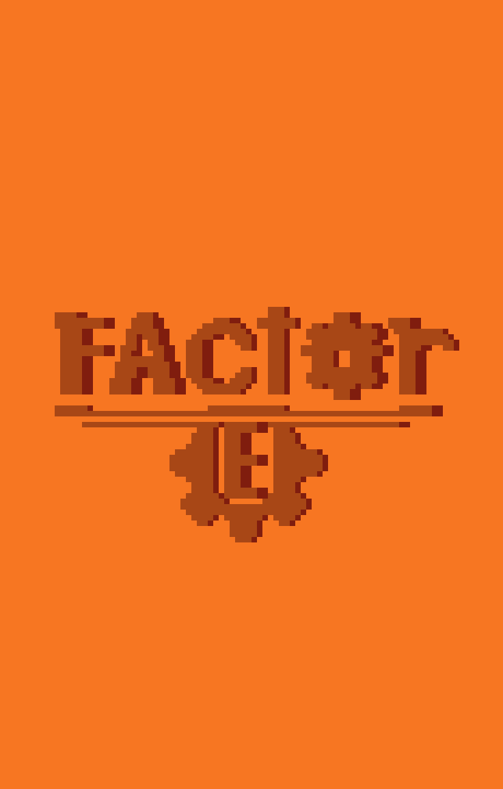

Factor-E es un plataformero 2D que combina combate estilo hack and slash con mecánicas de progresión RPG. Su estilo visual en pixel art de corte vintage recuerda a títulos como Shovel Knight, mientras que su jugabilidad mezcla la exploración de Wario Land y Donkey Kong Country con un sistema de combate inspirado en Sekiro. Todo esto acompañado de una banda sonora nostálgica, una estetica estilo steampunk y una historia tan bizarra como divertida.
En un futuro muy lejano... los seres humanos desaparecieron de forma misteriosa de la faz del planeta tierra y lo unico que quedo atras fueron solo sus creaciones más admiradas por ellos. Los Automatas, maquinas que parecidas a nosotros que una vez ayudaron y aprendieron con el ser humano tanto en las buenas como en las malas cosas. Despues de que los humanos se fueran los automatas, aprovechando su nueva libertad, empezaron a crear su propias civilizaciones comformadas por paises enteros. Pero estas maquinas no eran perfectas y las disputas entre estas se empezaron a formar, conflictos, guerras, Anarquia rondaba por todo el globo y mientras esto sucedia una curiosa unidad 3HK llamado Emre hacia de las suyas en su natal Nueva Pyth en lo que se conocia como Australia...
su sed de aventura y robo lo llevaron a volverse un habilidoso ladron y un maestro de la esgrima y todo iba bien hasta que decidio meterse donde no era. una red de crimen organizado conocidos como los Angeles caidos tuvo unos problemas con nuestro cinico protagonista... Y lo pago caro, toda su fortuna, su nombre, su fama todo se lo arrebataron y por poco su "vida" pero logro salirse mal herido.
Emre se la juro a la banda de los Angeles caidos y aqui es donde empieza nuestra aventura donde nuestro automata protagonista, Emre, decidira ir por todos los confines de Nueva Pyth en busqueda de lo que le pertenece y sobretodo, dejarle en claro al crimen organizado que el esta por encima de ellos y que nadie debe meterse con el apuesto, inteligente, habilidoso, casanova, bello, leal, maestro, vanidoso, poderoso, y EXTRAORDINARIO Emre. O almenos eso es lo que el dijo el antes de acabar necesitando ayuda de aliados q tambien se la tienen jurada a esta mafia...
Como ya se menciono anteriormente. Factor-E es un hack and slash, plataformero en 2D con sistemas de mejora al estilo rpg. El juego se embarca en un sistema de niveles en donde tu como jugador deberas vencer para llegar al destino de Emre. Cada nivel tiene lo suyo, desde niveles q combinan el combate con el parkour, hasta niveles de puro parkour donde se pondran aprueba tu habilidad como plataformero. Y por supuesto los niveles especiales, donde te enfrentaras a jefes que no dudaran 2 veces en acabar con Emre de una vez por todas
El juego posee diferentes mecanicas inspiradas en titulos como Donkey kong cuando se refiere en plataformero, el personaje posee; solo salto, un dash terrestre, sprint, un doble salto especial que solo se puede usar cuando golpeas objetos especiales del entorno, un gancho por el cual puedes agarrar fuerza y moverte más ágil por el aire, y habilidades exclusivas de diferentes niveles que solo se pueden usar en los niveles que los poseen (duh). Por el otro lado el combate es frenetico, algo arcade, en donde podras usar tu fiel sable con el que puedes ejecutar ataques a tus laterales, ataques hacia arriba, ataques bajos, un ataque cargado, un dash con estoque, y la mecanica mas esencial. El parry, mediante el parry el personaje conseguira recargar sus baterias cineticas y con estas podras invocar movimientos especiales o la oportunidad de regenerar tu vida (que es la unica forma de lograr obtener vida asi que... estate atento) tambien tienes la capacidad de usar herramientas que te pueden ayudar ya sea en combate o a la hora de hacer parkour, cada herramienta varia dependiendo de lo que busques, estas herramientas se pueden conseguir comprandolas en tiendas especiales que estan desplegadas por el mapa. Y para finalizar, puedes mejorar a tu personaje mediante puntos de experiencia que obtienes en combate, puedes mejorar desde tu fuerza, agilidad, baterias cineticas, e inclusive puedes obtener nuevas habilidades o estilos nuevos de combate, asi puedes armar tus propiar builds en el juego y hacer de tu travesia por Nueva Pyth más cómoda.
Disponible en steam

Tambien disponible para ps4 ps5 switch1